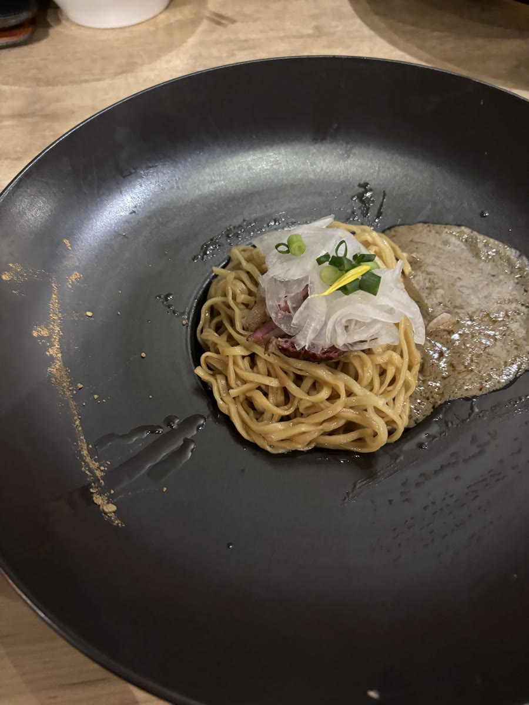

茨城・坂東市の「論露に不二」の純金目鯛ラーメンがめちゃくちゃ美味しかった
茨城県坂東市にあるラーメン屋 「論露に不二（ろんろにふじ）」 に、10月29日に初めて行きました。
先に結論を言うと、めちゃくちゃ美味しかったです。
まず、お店がおしゃれ
入ってまず思ったのは、店内がおしゃれだということ。
セルフで飲める飲み物も、水・ジャスミン茶・シナモン水 の3つ。ここまでおしゃれです。
純金目鯛（920円）

ラーメンが届いたときの見た目も、ふつうのラーメンとは違っていて、イタリアン料理かと思いました（笑）。
スープを口に入れた瞬間、金目鯛の風味がガツンと きて、美味しかったです。
麺もぱつぱつで、スープにもよく絡んで、すごく美味しい。
替え玉「ズワイ蟹のソース」（460円）
途中で替え玉も注文しました。

替え玉は、写真のとおり本当にイタリアンみたいな見た目です。
まぜそばみたいに、ソースと混ぜて食べる のが一般的な食べ方です。
混ぜて食べると、カニの風味が思っていた以上にして、うますぎました。
お店のこと
- 店名：論露に不二（ろんろにふじ）
- 場所：茨城県坂東市
- 駐車場：すごく広いです。ぱっと見、20台くらいは停められそうでした
- 混み具合：18時くらいに行って、入ったときは全然混んでいませんでした。でも食べているあいだにひっきりなしにお客さんが入ってきて、途中から並びができていました
営業時間や定休日は変わることがあるので、行く前にお店の最新の情報を確認してください。
男性だけでなく、女性にもおすすめできるお店 だと思いました。
また行きたい
ぜひ次も行ってみたいです。
メニューがいっぱいあるので、次に何を頼むかは迷います……。そのときの気分次第ですが、たぶんまた同じのを頼んじゃいそうです。